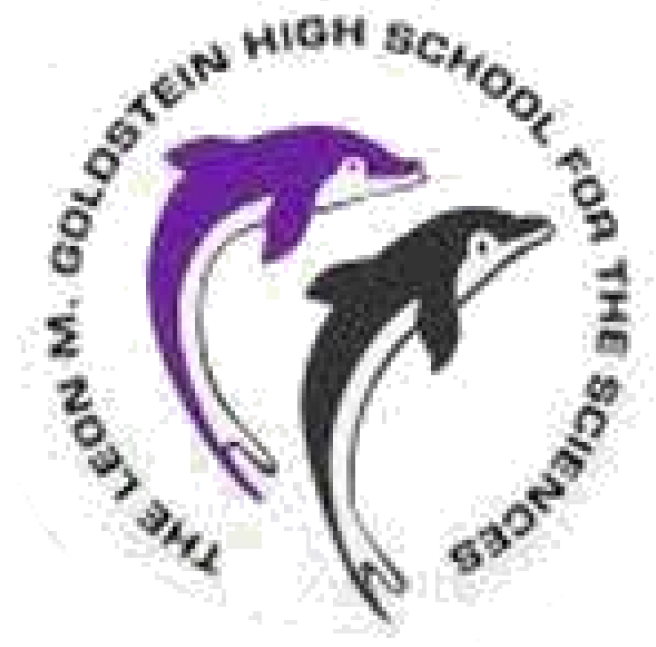
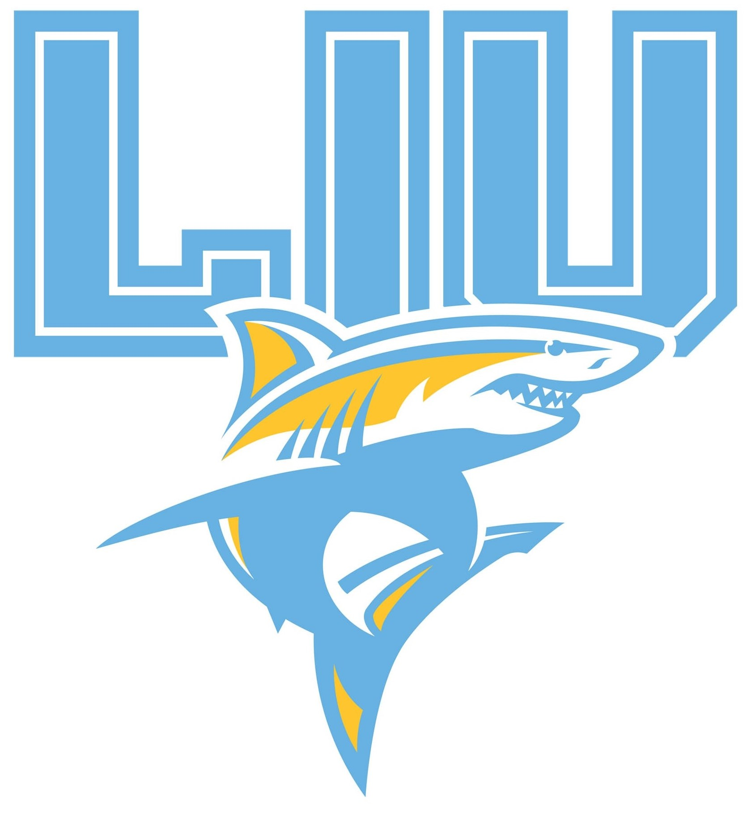

Education
| Degree | Institution | Graduation Date | GPA | Achievements |
|---|---|---|---|---|
| Middle School Diploma |

Bay Academy |
June 2020 | 3.9 | Academic Excellence Medal |
| High School Diploma |

Leon M. Goldstein High School |
June 2024 | 4.0 | Advanced Regents Diploma with Honors |
| Digital Engineering Bachelor Degree |

Long Island University |
May 2028 | 4.0 | Dean's Award |